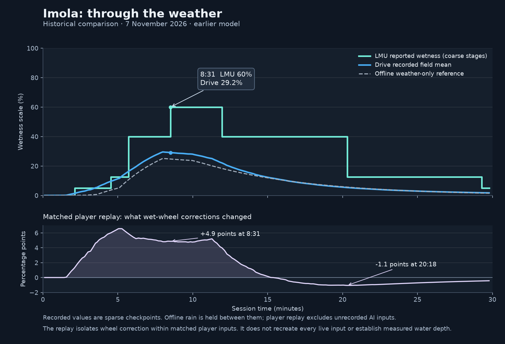

ROOKLINE / RESEARCH & FIELD NOTES
A CLOSER LOOK.
A BETTER NEXT LAP.
The useful part of research is what it helps you understand. Here are a few things we’re exploring, what the examples actually show, and where the limits sit.
01 / THE TRACK, THROUGH THE WEATHER
RAIN STOPS.
THE ROAD
REMEMBERS.
The question is simple: how can changing track conditions be easier to read? Drive’s surface work combines recorded conditions with an estimated road state to explore wetting, traffic effects and drying over time.
The published Imola example shows different stretches carrying different surface colours. The comparison below keeps game-reported stages separate from the model’s estimate.
Historical research example, November2026. Surface colours are estimates, not measured water depth at every point. An offline replay does not establish live performance or every-track accuracy.
See the track-view showcase ↗
02 / COMPARISON, WITH CONTEXT
SHOW THE
EVIDENCE.
KEEP IT HONEST.
This published historical comparison places the game’s coarse reported wetness stages alongside Drive’s field estimate. They describe different things; the chart makes that distinction visible.
Earlier model comparison, November7,2026. Recorded checkpoints are sparse. The player replay excludes unrecorded AI inputs and does not recreate every live input. It is not a claim of exact wetness agreement.

03 / FAMILIAR INFORMATION, YOUR CAR’S CHARACTER
ONE GLANCE.
YOUR CAR.
Drive’s instruments explore car-specific RPM shapes, palettes and warning presentation while keeping core driving information in familiar places.
The BMW and Ferrari examples show different visual treatments for the same essential job: a readable instrument in your cockpit.
Product captures demonstrate appearance and available information. They are not a laboratory measurement of glance time or a claim of a safety benefit.
Explore the instruments ↗
04 / ASETEK-FOCUSED
YOUR PROFILE.
THE NEXT CAR.
RookForce’s focus is the profile you actually chose: matching cars to saved RaceHub profiles and checking which profile became active.
Full support is centred on the Asetek Forte wheelbase. Support for other wheelbases is partial; a profile screenshot does not establish compatibility with every device.
RookForce research & context ↗
Game meaning and product experiments have different roles. For LMU’s own documentation, use the official Le Mans Ultimate guide. Published schedules come from LMU Portal. These references do not independently validate Rookline’s model.
Have a useful observation or an idea? Bring it to the community.